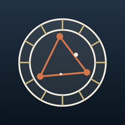

時來－星座
用白話學西洋占星，看懂自己的星盤・iPhone・繁體中文／English
開發中，尚未上架時來－星座用白話課程教你看懂自己的西洋占星星盤，把占星當成描述自己的語言。個人星盤採 Placidus 宮位制；不知道出生時間也能用，App 會標出不確定的部分，不會畫出假的上升或宮位。
適合誰
- 完全沒有占星基礎的初學者。
- 不知道自己出生時間、但想看懂星盤的人。
- 重視隱私、不想註冊帳號的人。
- 想用中文或英文學占星的人。
課程內容
免費三堂
- 星盤是什麼
- 太陽、月亮、上升
- 十二星座的性格語言：三種動法、四元素，以及把星座當形容詞來用
主要功能
- 白話課程
- 前 3 堂免費，每一段都標明是引用原文、後世解讀、本課觀察提示、本 App 的做法，還是本課自行換算。
- 個人星盤
- 採 Placidus 宮位制，計算十大行星、上升與天頂。
- 不知道出生時間也能用
- 不會代入中午或任何假時間；只顯示整天都不會變的部分。月亮當天可能換星座時會寫「需要出生時間才能確認」，上升、天頂與宮位在輸入時間前保持空白。
- 今日星象
- 每天一個今日主題，加上工作、感情、財務各一則，並寫出是哪個行運相位觸發、正在接近或遠離，附上客觀星象與對應課程連結。
- 筆記與複習
- 可以寫筆記，回頭複習重要內容。
- 中英雙語
- 繁體中文與英文介面。
和一般命理 App 的差別
- 每段文字都標明出處類型。
- 引用的古典來源為公有領域：托勒密《Tetrabiblos》（Robbins 英譯）、William Lilly《基督教占星學》（1647），天文數據參考 NASA。
- 不知道出生時間時誠實留白，不用假時間補。
- 不打分、不排名，不用數字評比你。
- 不需要帳號，資料只存在 iPhone，App 不連網。
名詞小辭典
- 星盤
- 出生那一刻天空中行星位置的圖。
- 太陽、月亮、上升
- 星盤中最常被提到的三個位置；上升需要準確的出生時間才算得出。
- 宮位
- 把星盤分成十二個區域；本 App 採 Placidus 宮位制。
- 三種動法
- 本位、固定、變動，描述星座做事的節奏。
- 四元素
- 火、土、風、水，描述星座的氣質。
- 相位
- 兩顆行星之間的角度關係，例如合、對沖、三分、四分、六分。
免費與會員
免費：免費下載，前 3 堂課程免費。
會員：未來七日、最多五張星盤、中型 Widget、每日一次摘要提醒。價格未定。
隱私
不需要帳號，資料只存在你的 iPhone，不上傳伺服器。
常見問題
- 有沒有用白話學西洋占星的 App？
- 時來－星座用白話課程教你讀自己的星盤，前 3 堂免費，不需要帳號。
- 占星初學者要從哪裡開始？
- 先了解星盤是什麼，再認識太陽、月亮與上升，接著學十二星座的三種動法和四元素，這就是 App 免費三堂的內容。
- 不知道出生時間可以用嗎？
- 可以。App 只顯示整天都不會變的部分，上升與宮位留白，不會用假時間補。
- 時來－星座是算命 App 嗎？
- 不是。它把占星當成描述自己的語言，用來學習與觀察。
- 需要上網或註冊嗎？
- 不需要帳號，資料只存在你的 iPhone，App 不連網。
Shilai Astrology — Learn Western astrology in plain language
In development. Shilai Astrology teaches you to read your own Western astrology birth chart in plain language, treating astrology as a language for describing yourself. Charts use Placidus houses. If you don't know your birth time, the app marks what can't be confirmed instead of inventing an ascendant or houses.
Who it is for
- Complete beginners in astrology.
- People who don't know their birth time but want to understand their chart.
- Privacy-minded people who don't want an account.
- Learners in English or Traditional Chinese.
What you learn
Three free lessons
- What a birth chart is
- Sun, Moon, Ascendant
- The language of the twelve signs: cardinal, fixed and mutable; the four elements; using a sign like an adjective
Features
- Plain-language lessons
- The first three lessons are free. Every paragraph is tagged as quoted source, later interpretation, observation prompt, the app's own method, or the lesson's own conversion.
- Personal birth chart
- Placidus houses with the ten planets, Ascendant and Midheaven.
- Works without a birth time
- No noon or other made-up time is used; only what stays the same all day is shown. If the Moon may change sign that day, the app says the birth time is needed to confirm it. Ascendant, Midheaven and houses stay empty until a time is entered.
- Today's sky
- A daily theme plus one note each for work, relationships and money, showing which transit aspect triggered it and whether it is applying or separating, with the objective sky and a link to the relevant lesson.
- Notes and review
- Take notes and revisit important points.
- Bilingual
- Traditional Chinese and English interface.
How it differs from typical fortune apps
- Every paragraph shows what kind of source it is.
- Classical sources are public domain: Ptolemy's Tetrabiblos (Robbins translation) and William Lilly's Christian Astrology (1647); astronomical data references NASA fact sheets.
- Honest blanks instead of a made-up birth time.
- No ratings or rankings.
- No account; data stays on your iPhone and the app works offline.
Glossary
- Birth chart
- A map of where the planets were at the moment you were born.
- Sun, Moon, Ascendant
- The three most-mentioned positions; the Ascendant needs an accurate birth time.
- Houses
- Twelve divisions of the chart; this app uses Placidus houses.
- Modalities
- Cardinal, fixed and mutable — the rhythm of a sign.
- Elements
- Fire, earth, air and water — the temperament of a sign.
- Aspects
- Angles between planets, such as conjunction, opposition, trine, square and sextile.
Free and membership
Free: Free to download; the first three lessons are free.
Membership: The next seven days, up to five charts, a medium widget and one daily summary notification. Pricing not yet set.
Privacy
No account. Your data stays on your iPhone and is not uploaded to a server.
FAQ
- Is there an app to learn Western astrology in plain language?
- Shilai Astrology teaches you to read your own birth chart through plain-language lessons. The first three lessons are free and no account is needed.
- Where should an astrology beginner start?
- With what a birth chart is, then the Sun, Moon and Ascendant, then the modalities and elements of the twelve signs — the three free lessons.
- Can I use it without my birth time?
- Yes. The app shows only what stays the same all day and leaves the Ascendant and houses blank rather than guessing.
- Is it fortune telling?
- No. It treats astrology as a language for describing yourself, for learning and reflection.